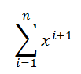
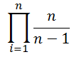
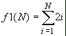

.
Objetivos:
- Aplicar el ciclo for en la
solución de problemas.
- Aplicar los conocimientos
sobre funciones.
- Utilizar funciones acompañadas
de la estructura "for".

Modalidad:

Instrucciones:
- Implementa las siguientes
funciones, recuerda que las funciones se definen antes de la
codificación del script principal.
- La función
factorial(n) que recibe un
número entero positivo n y genere el factorial del
este número, mostrando los resultados parciales y final.
Ejemplo:
Si
el valor de n = 5 se deberá mostrar: 1 X 2 X 3 X 4
X 5 = 120
pideNumeros(cantidad)
que recibe la cantidad de números que quiere ingresar y calcula el
mayor y menor de ellos.
Ejemplo:
Si cantidad es 5 se pedirían 5 números:
Dame un número:
3
Dame un número:
5
Dame un número:
8
Dame un número: 79
Dame un
número: 10
El
valor mínimo es: 3
El
valor máximo es: 79
La función
maximoComunDivisor(num1, num2)
que recibe dos números enteros positivos: num1, num2 y regresa el máximo común
divisor de esos números.
Ejemplo:
maximoComunDivisor(12,8), la función regresaría 4.
f1(x, n)
que recibe dos valores enteros mayor o igual a uno (x, n); y
utilizando un ciclo for regresa el resultado de la siguiente
sumatoria:

Por ejemplo:
f1(5,3) =
52
+ 53 +
54
f1(2,4) = 22
+ 23
+ 24
+ 25
-
La función
f2(n)
que recibe un valor entero mayor o igual a uno; y utilizando un
ciclo for regresa el resultado de la siguiente multiplicatoria:

Por ejemplo:
f2(4) =
(2/1)*(3/2)*(4/3)
f2(5) = (2/1)*(3/2)*(4/3)*(5/4)
-
La función
f3(n)
que recibe un valor entero mayor o igual a uno; y utilizando un
ciclo for regresa el resultado de la siguiente serie:
f3 ( n ) = - 2 + 4 - 6 + 8 - 10 + ... n
Por ejemplo:
f3( 1 ) = -2
f3( 2 ) = -2 + 4 = 2
f3( 3 ) = -2 + 4 - 6 = -4
f3( 4 ) = -2 + 4 - 6 + 8 = 4
-
La función
incrementoDecremento(LI, LS, INC)
que recibe tres números enteros, el limite inferior de la serie LI,
el límite superior de la serie LS y el incremento INC. SI el
incremento es negativo la serie deberá decrecer, si el incremento
es positivo la serie debera de ir aumentando. Y utilizando un ciclo
for, la función deberá desplegar en pantalla la secuencia de
números desde LI hasta el LS en incrementos INC ó desde LS hasta
LI en decrementos INC.
Por ejemplo:
incrementoDecremento (3, 15, 2), desplegará en
pantalla: 3 5 7 9 11 13 15
incrementoDecremento (15, 7, -.2), desplegará en
pantalla: 15 13 11 9 7
-
La función
aleatorios()
que despliega en pantalla 50 números aleatorios entre -10 y 120.
-
La función
f1(N)
que recibe un valor entero mayor o igual a uno; y utilizando un
ciclo for regresa el resultado de la siguiente sumatoria:

Por ejemplo:
f1(3) = 2(1)+ 2(2) + 2(3) = 12
f1(6) = 2(1) + 2(2) +2(3) + 2(4) + 2(5)
+ 2(6) = 42
-
La función
f2(N)
que recibe un valor
entero mayor o igual a uno; y utilizando un ciclo for regresa el
resultado de la siguiente multiplicatoria:

Por ejemplo:
f2(2) = (3(1)-1) * (3(2)-1) = 10
f2(4) = (3(1)-1) * (3(2)-1) * (3(3)-1) *
(3(4)-1) = 880
-
La función
f3(n)
que recibe un valor entero mayor o igual
a uno; y utilizando un ciclo for regresa el resultado de la
siguiente serie:
f3 ( n ) = - 1 + 2 - 3 + 4 - 5 + ... n
Por ejemplo:
f3( 1 ) = -1
f3( 2 ) = -1 + 2 = 1
f3( 3 ) = -1 + 2 - 3 = -2
f3( 4 ) = -1 + 2 - 3 + 4 = 2
-
La función
incremento(LI, LS) que recibe
dos números reales, el limite inferior de la serie LI y el límite
superior de la serie LS. La función deberá desplegar en pantalla la
secuencia de números desde LI hasta el LS en incrementos de 2.
Por ejemplo:
incremento(3, 15), desplegará en pantalla:
3
5 7 9 11 13 15
incremento(5, 18), desplegará en pantalla:
5
7 9 11 13 15 17
-
El procedimiento
aleatorios()
que despliega en pantalla 40 números aleatorios entre -30 y 50.
()
que despliegue el siguiente menú en pantalla:
.
1.
Funcion 1
2.
Funcion 2
3. Funcion 3
4. Incremento y decremento
5. Aleatorios
1.
Funcion 1
2.
Funcion 2
3. Funcion 3
4. Incremento
5. Aleatorios
6. Salir
main()
que utilice la función menu para desplegar el menú
correspondiente y de acuerdo a la opción seleccionada por el usuario
le dé la oportunidad de ejecutar cualquiera de las funciones que
han sido construidas. Utiliza el estatuto de control if.
Recuerda que la captura de datos debe ser realizada en la sección
del main. Debes utilizar el ciclo while para que
se cicle el programa hasta que el usuario introduzca la opción de
salir o una opción inválida.
En el
script principal manda llamar a
la función main.
Guarda tu archivo como:
Q_Matrícula.py


Recursos:

Especificaciones de
entrega en Canvas:
Nombre de los entregables:
Q_matricula.py
Medio de entrega: Se
entrega en Canvas en la sección de Tarea: For
Instrucciones para enviar tus archivos por Canvas:
Especificaciones de
entrega en Alphagrader:
Instrucciones para enviar tus archivo por Alphagrader
(www.alphagrader.com):
-
Ir a pestaña/tab de
Submissions.
-
Presiona el botón Create team.
-
Selecciona solo tu matricula
y presiona Save.
-
Presiona el botón Upload New
Submission.
-
Selecciona tu programa. Tu programa debe
llamarse program.py y estar comprimido en un
archivo .zip. Para comprimir un archivo da clic
con el botón derecho sobre el archivo Enviar a→ Carpeta
comprimida (en zip). Ejemplo: program.zip
-
Selecciona el lenguaje: Python.
-
Presiona el botón save.
|